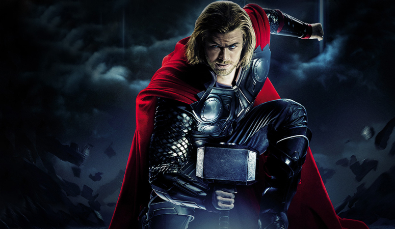
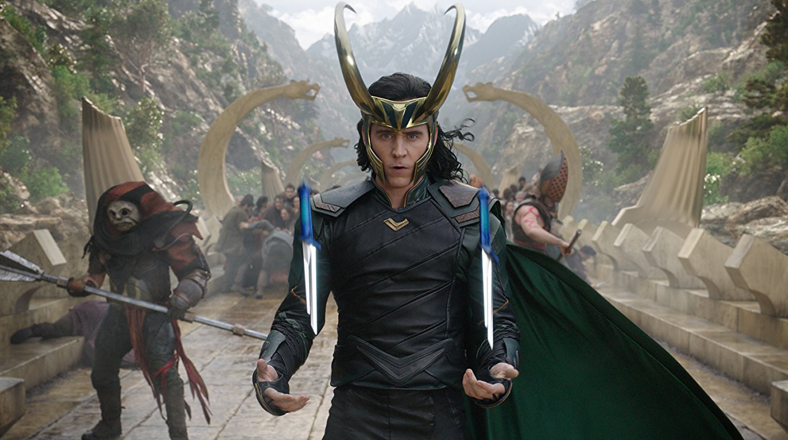
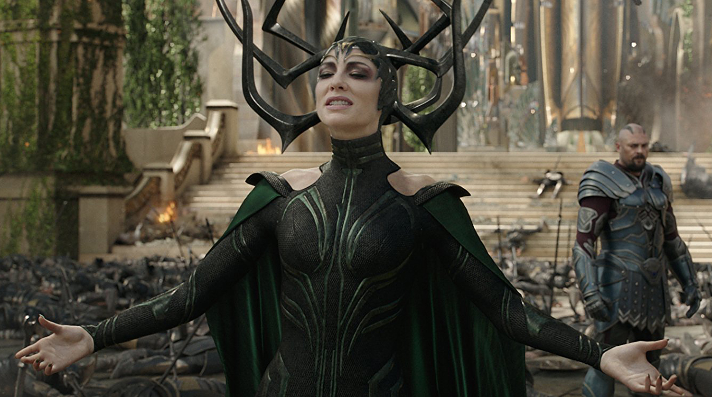
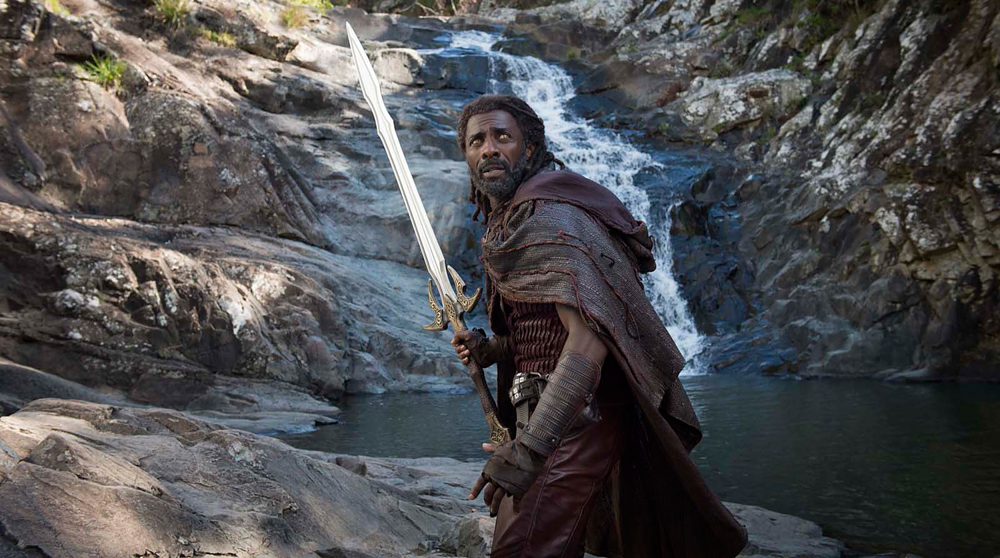
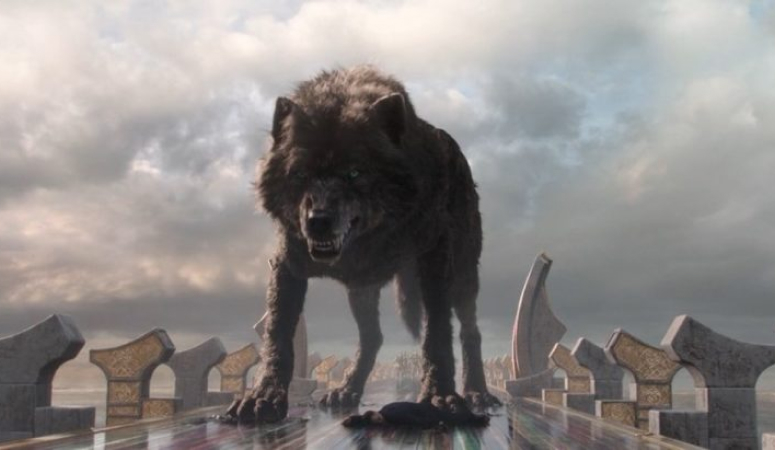

Тор
Тор - бог грому, доблесний воїн і син великого Одіна (володаря королівства Асгард).
З самого дитинства він відрізнявся сміливістю і відвагою. Головні риси його характеру - чесність і відкритість. Тор завжди з великою повагою ставився до свого батька і братів (Бальдур і Локі)
Локі
Локі - бог крутійства, класичний трикстер і постійний супутник Тора в його подорожі та пригоди.
У міфах його мотивація куди остроумней - він просто хоче як слід повеселитися. Саме з цією метою він і влаштовує Рагнарек, головними дійовими особами якого, крім різноманітних богів, стають гігантський вовк Фенрир і вже згаданий змій YOрмунгланд, які
припадають Локі синами. У фільмі, втім, Локі в результаті стає вимушеним помічником Тора.
Хела
Вона ж Хель - головна лиходійка нового фільму Marvel на екрані виступає в образі Кейт Бланшетт і називає себе дочкою Одіна, засланої їм до місцевих тартарари за особливу жорстокість.
У міфах же Хель - дочка Локі, якій за взаємною згодою було віддано країна мертвих, що отримала назву Хельхейм. Під час міфологічного Рагнарека Хель приєднується до воїнству свого батька і веде на Асгард армію мерців.
Хеймдалль
Вкрай популярний в сучасній культурі персонаж - вовк Рагнарека Фенрир. Як вже було сказано, він є сином Локі і велетці Ангрбоди.
Виріс серед богів вовк був настільки величезний і несамовитий, що зв'язати його вдалося лише за допомогою ланцюга, зробленої з ведмежих жив, пташиної слини, жіночої бороди і ще ряду аналогічних інгредієнтів.
Фенрир
Вкрай популярний в сучасній культурі персонаж - вовк Рагнарека Фенрир.
Як вже було сказано, він є сином Локі і велетці Ангрбоди. Виріс серед богів вовк був настільки величезний і несамовитий, що зв'язати його вдалося лише за допомогою ланцюга, зробленої з ведмежих жив, пташиної слини, жіночої бороди і ще ряду аналогічних
інгредієнтів.